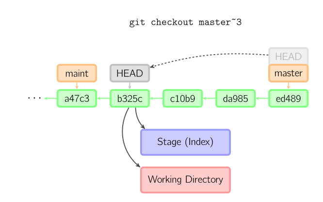
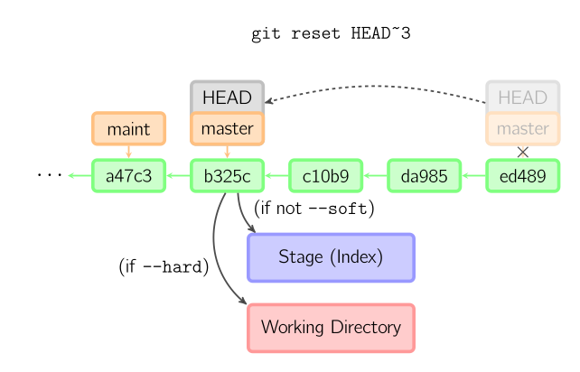

What's the difference between "git reset" and "git checkout"?
I've always thought of git reset and git checkout as the same, in the
sense that both bring the project back to a specific commit. However, I feel
they can't be exactly the same, as that would be redundant. What is the actual
difference between the two? I'm a bit confused, as the svn only has svn co
to revert the commit.
ADDED
VonC and Charles explained the differences between git reset and git
checkout really well. My current understanding is that git reset reverts
all of the changes back to a specific commit, whereas git checkout more or
less prepares for a branch. I found the following two diagrams quite useful in
coming to this understanding:

ADDED 3
From http://think-like-a-git.net/sections/rebase-from-the-ground-up/using-git- cherry-pick-to-simulate-git-rebase.html, checkout and reset can emulate the rebase.

git checkout bar git reset --hard newbar git branch -d newbar

Answer
-
git resetis specifically about updating the index , moving the HEAD. -
git checkoutis about updating the working tree (to the index or the specified tree). It will update the HEAD only if you checkout a branch (if not, you end up with a detached HEAD).
(actually, with Git 2.23 Q3 2019, this will begit restore, not necessarilygit checkout)
By comparison, since svn has no index, only a working tree, svn checkout
will copy a given revision on a separate directory.
The closer equivalent for git checkout would:
-
svn update(if you are in the same branch, meaning the same SVN URL) -
svn switch(if you checkout for instance the same branch, but from another SVN repo URL)
All those three working tree modifications (svn checkout, update,
switch) have only one command in git: git checkout.
But since git has also the notion of index (that "staging area" between the
repo and the working tree), you also have git reset.
Thinkeye mentions in the comments the article "Reset Demystified ".
For instance, if we have two branches, '
master' and 'develop' pointing at different commits, and we're currently on 'develop' (so HEAD points to it) and we rungit reset master, 'develop' itself will now point to the same commit that 'master' does.On the other hand, if we instead run
git checkout master, 'develop' will not move,HEADitself will.HEADwill now point to 'master'.So, in both cases we're moving
HEADto point to commitA, but how we do so is very different.resetwill move the branchHEADpoints to, checkout movesHEADitself to point to another branch.

On those points, though:
LarsH adds in the comments:
The first paragraph of this answer, though, is misleading: "
git checkout... will update the HEAD only if you checkout a branch (if not, you end up with a detached HEAD)".
Not true:git checkoutwill update the HEAD even if you checkout a commit that's not a branch (and yes, you end up with a detached HEAD, but it still got updated).git checkout a839e8f updates HEAD to point to commit a839e8f.
De Novo concurs in the comments:
@LarsH is correct.
The second bullet has a misconception about what HEAD is in will update the HEAD only if you checkout a branch.
HEAD goes wherever you are, like a shadow.
Checking out some non-branch ref (e.g., a tag), or a commit directly, will move HEAD. Detached head doesn't mean you've detached from the HEAD, it means the head is detached from a branch ref, which you can see from, e.g.,git log --pretty=format:"%d" -1.
- Attached head states will start with
(HEAD ->,- detached will still show
(HEAD, but will not have an arrow to a branch ref.
Suggest
In their simplest form, reset resets the index without touching the working
tree, while checkout changes the working tree without touching the index.
Resets the index to match HEAD, working tree left alone:
git reset
Conceptually, this checks out the index into the working tree. To get it to
actually do anything you would have to use -f to force it to overwrite any
local changes. This is a safety feature to make sure that the "no argument"
form isn't destructive:
git checkout
Once you start adding parameters it is true that there is some overlap.
checkout is usually used with a branch, tag or commit. In this case it will
reset HEAD and the index to the given commit as well as performing the
checkout of the index into the working tree.
Also, if you supply --hard to reset you can ask reset to overwrite the
working tree as well as resetting the index.
If you current have a branch checked out out there is a crucial different
between reset and checkout when you supply an alternative branch or
commit. reset will change the current branch to point at the selected commit
whereas checkout will leave the current branch alone but will checkout the
supplied branch or commit instead.
Other forms of reset and commit involve supplying paths.
If you supply paths to reset you cannot supply --hard and reset will
only change the index version of the supplied paths to the version in the
supplied commit (or HEAD if you don't specify a commit).
If you supply paths to checkout, like reset it will update the index
version of the supplied paths to match the supplied commit (or HEAD) but it
will always checkout the index version of the supplied paths into the working
tree.